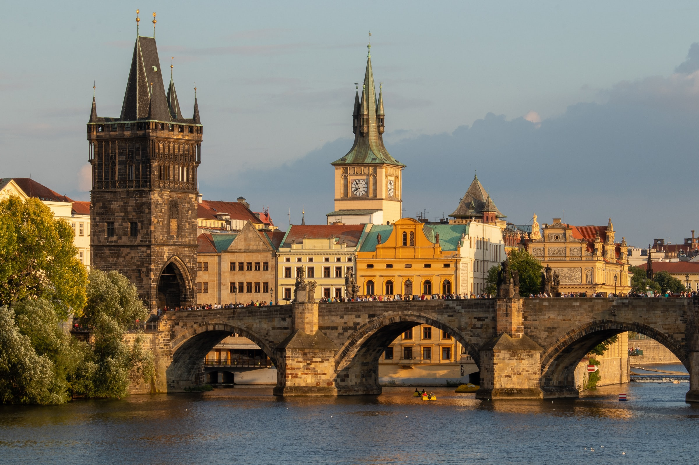
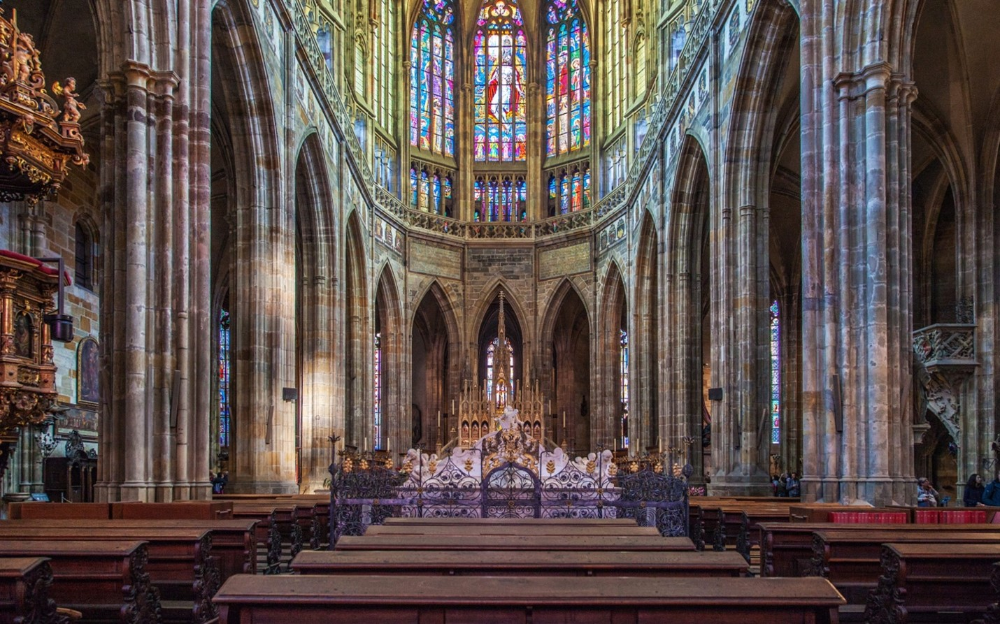
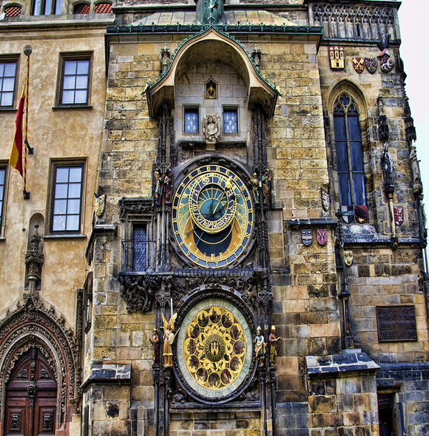
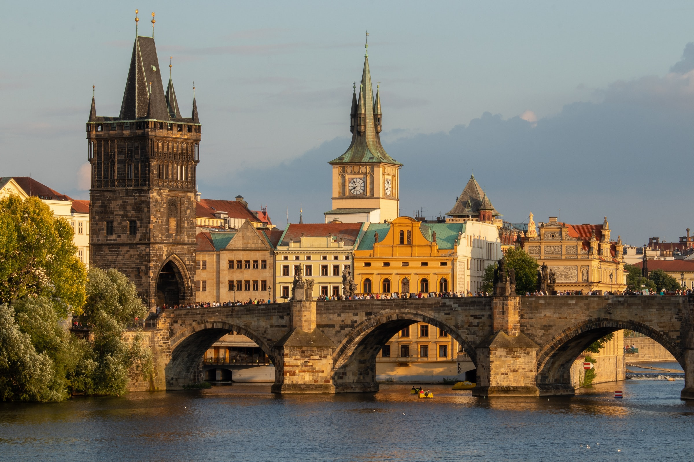
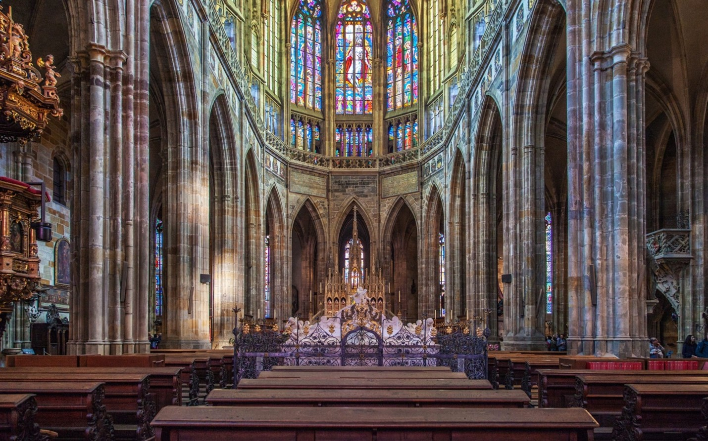
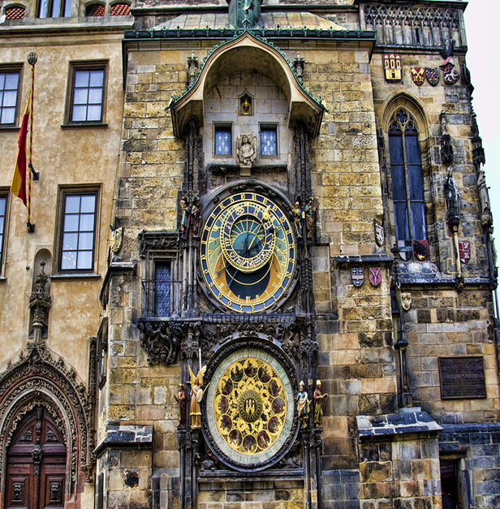

St. Vitus Cathedral
Prague
“Vitus Cathedral is the largest and the most important cathedral in Prague. Various religious services, coronations of Czech kings and queens also took place here. The cathedral is a place of burial of several patron saints including St. Wenceslas and Charles IV, sovereigns, noblemen and archbishops. The foundations for St. Vitus’ Cathedral were laid in the tenth century. Wenceslas I, Duke of Bohemia, had obtained St. Vitus’ arm, and wanted to build a church to hold the relic which was very important to the Christian faith.”
– SANKALPA ROY
 




